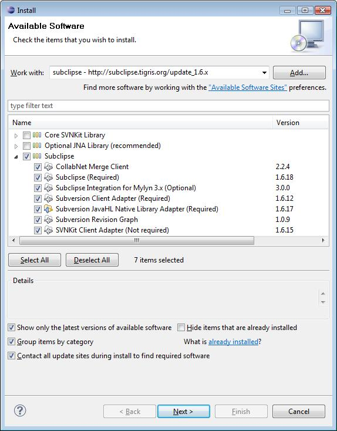
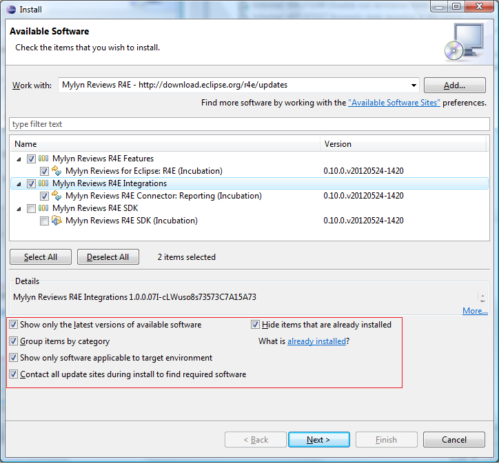
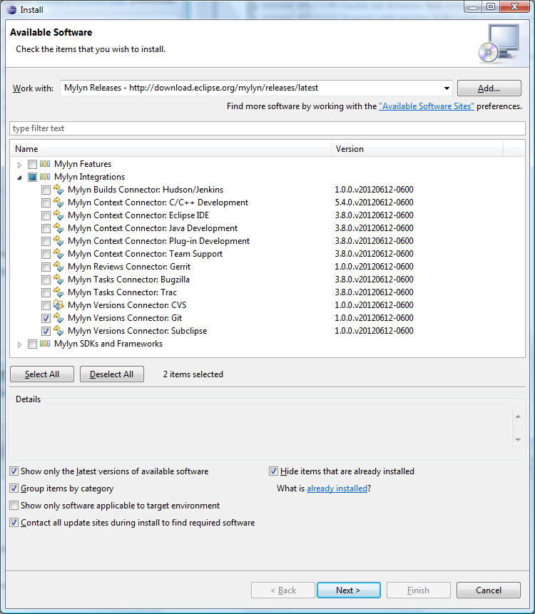

R4E uses some Mylyn components so you will need to add the Mylyn Release update site.
Add the following Software Sites to the Eclipse workspace (Help -> Install New Software -> Add)
Mylyn Release: http://download.eclipse.org/mylyn/releases/latest
Mylyn Reviews R4E Updates: http://download.eclipse.org/r4e/updates/
if Subversion is to be used, add the subclipse site of the subclipse version you want to use e.g.
http://subclipse.tigris.org/update_1.6.x
R4E uses Mylyn Versions to interact with different version control systems.

Help -> Install New Software, and select the Mylyn Reviews site provisioned above.

Help -> Install New Software, and select the Mylyn Versions site provisioned above.
Select the connector(s) needed to interface your version control system(s).
currently, R4E supports Git and Subclipse connectors.
